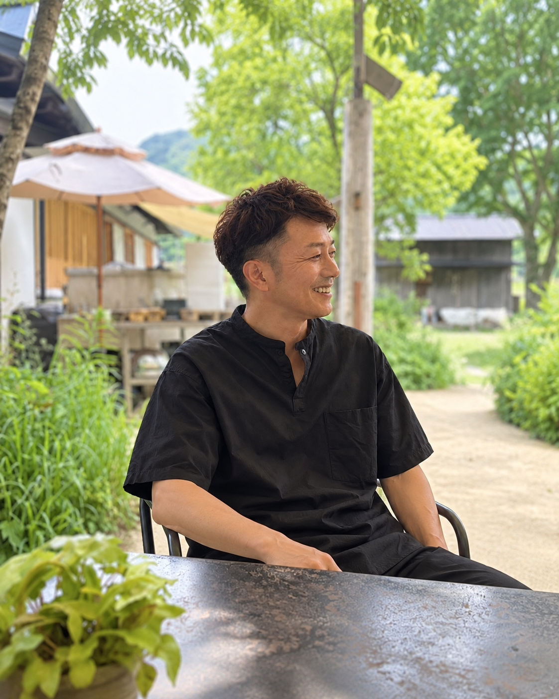

始める話をする人は、たくさんいます。
私は、閉じる場面も見てきました。
商工会の相談窓口で20年以上、創業する人、続けている人、そして店を閉じる人の相談に関わってきました。だからこの診断は、「やってみる」と同じ重さで「今はやらない」「やめる」も選べるようにしています。

中村 裕二BRIDGE CYCLE株式会社 代表取締役／国の認定経営革新等支援機関（認定番号 109825000112）
何をしてきた人か。
肩書きよりも、実際に手を動かしてきた量で判断していただければと思います。
相談の中身は業種を選びません。飲食、小売、手仕事やものづくり、教室、サービス業、地域の小さな場。「これは商売になるのか」という問いは、どの業種でも同じ形をしています。
閉じる場面を見てきたから、
「やめてもいい」と言えます。
いま私が本業にしているのは、お店を閉じる前に、内装や設備を次の店主へ渡す「退店前承継」という仕事です。掲げているのは「店じまいを、まちのはじまりに。」という言葉です。
閉店の相談に来る方の多くは、失敗した人ではありません。体力、家族の事情、家賃、時代の変化。続けられなくなった理由はさまざまで、そのほとんどは本人の努力不足ではありませんでした。ただ、共通していたことが一つあります。始めるときに大きく賭けた人ほど、やめるときの傷が深い。
だからこの診断は、独立や開業をゴールにしていません。まず3人に、小さく売ってみる。続けたければ続ける。合わなければやめる。その全部を、はじめから選べるようにしてあります。
できること、しないこと。
認定経営革新等支援機関として関われる範囲と、他の専門家にお願いする範囲を、先にはっきりさせておきます。
できること
- 経験を、売れる形（誰に・何を・いくらで）に整理する
- 売上・原価・使える時間から、無理のない規模を一緒に決める
- 事業計画・資金計画のたたき台をつくる
- 補助金や融資が使えるか、使うべきかを判断する材料を出す
- 必要に応じて、商工会・金融機関・専門家へつなぐ
- 続ける・変える・やめるの判断に、数字で付き合う
しないこと
- 「必ず儲かる」という約束や、成功の保証
- 起業や独立を勧めること（今はやらない、も同じ価値の選択です）
- 許認可の申請代理、補助金申請書の代理作成（提携する専門家の領域です）
- 広告運用やホームページ制作の代行
- 診断のあとに、高額な講座や継続契約へ誘導すること
無料診断だけで十分なら、それで終わって構いません。有料の3案プランも30日伴走も、必要だと思った方だけが選べば足ります。
私自身も、一本道ではありませんでした。
大学院ではイタリアのファッション産業を研究し、博士後期課程まで進みました。けれど研究者の道には進まず、商工会で小さな事業者や創業者の相談に関わる仕事を選びました。
それから20年以上。仕事も暮らしも、一度決めた形をそのまま続けてきたわけではありません。家族の変化や仕事の選び直しを経験し、その都度、条件を見直しながら進んできました。そして長く続けてきた仕事を辞め、自分で会社をつくりました。積み上げてきた経験を手放すのではなく、自分のやり方で社会に出し直す選択でした。
遠回りに見えた研究の時間
産業や事業を構造で見る力として、今も残っています。
迷っている人とも向き合ってきた
うまくいっている人だけでなく、やめようか悩んでいる人の側にもいました。
その時の自分に合わせて組み替えた
一度決めたことに固執せず、暮らしごと選び直してきました。
全部を変える前に、小さく始めた
今あるものを守りながら試す方法を、自分でも選びました。
この診断で大事にしていること
本人が「普通」と思っていることの中に、他人から見れば価値がある。逆に、やりたいと思っていることでも、話していくと別の方向が自然なこともあります。だから正解を押しつけるのではなく、外から見るきっかけをつくります。